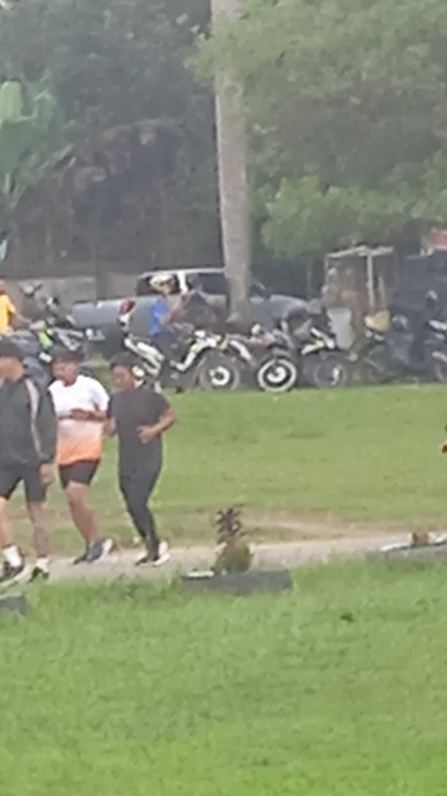

SELAMA LIBURAN SAYA DI RUMAH AJA ( HARI 2 ).DIPAGI HARI SETELAH BANGUN TIDUR SAYA LANGSUNG MENUJU KE KAMAR MANDI BERSEGERA WUDHU,SESUDAH BERWUDHU SAYA LANGSUNG MENUNAI SHOLAT SUBUH 2 RAKAAT,SETELAH SHOLAT SUBUH SAYA MENGAJI 5 BARIS.JAM 6.15 SAYA MANDIN,SESUDAH MANDI SAYA SERAPAN DENGAN NASI GORENG.JAM 7.05 SAYA MEMBANTU ORANG TUA MEMBUKA WARUNG SAMPAI SORE.SESUDAH MEMBATU ORANG TUA SAYA MEMINTA IZIN BALEK BUAT JOGING BERSAMA TEMAN DI LAPANGAN MTQ.
SESUDAH JOGING BERSAMA KAWAN SAYA BERSEGERA PULANG KERUMAH.TETIBA DI RUMAH SAYA MANDI SORE,SUDAH MANDI SAYA MEMBANTU ORANG TUA SAMPAI MALAMKIRA KIRA SESUDAH SHOLAT ISYA SAYA DAN ORANG TUA SAYA DAN SAYA PULANG KERUMAH,TETIBA DIRUMAH SAYA MAKAN MALAM,SESUSAH MAKAN SAYA TIDUR MALAM.
